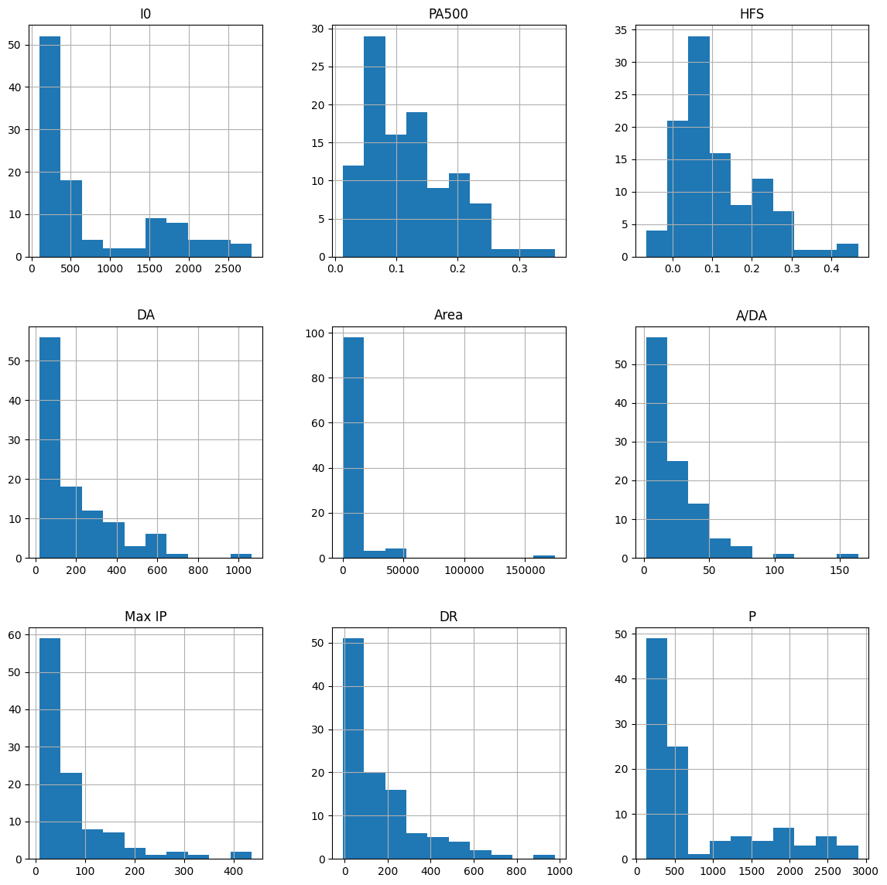

from google.colab import drive
drive.mount("/content/drive")Mounted at /content/driveNama : Krisdova Rio Alvonsa
NIM : 210411100165
Kelas : PSD B
from google.colab import drive
drive.mount("/content/drive")Mounted at /content/drive%cd /content/drive/MyDrive/PSDKris3/content/drive/MyDrive/PSDKris3Melakukan klasifikasi pada dataset kelenjar payudara yang didapat dari INEB-Instituto de Engenharia Biomédica, berikut adalah 6 kelas kelainan dari sampel kelenjar payudara :
1. Car (Carcinoma): Karsinoma, yang merupakan jenis kanker.
2. Fad (Fibro-adenoma): Fibro-adenoma, sebuah jenis tumor jinak yang umum pada payudara.
3. Mas (Mastopathy): Mastopati, sebuah kondisi di mana jaringan payudara mengalami perubahan patologis.
4. Gla (Glandular): Jaringan kelenjar.
5. Con (Connective): Jaringan ikat.
6. Adi (Adipose): Jaringan adiposa atau jaringan lemak.
Berikut adalah fitur-fitur yang terdapat dalam dataset :
1. I0 (Impedivitas pada Frekuensi Nol)
2. PA500 (Sudut Fase pada 500 KHz)
3. HFS (Kemiringan Tinggi Frekuensi Sudut Fase)
4. DA (Jarak Impedansi antara Ujung Spektrum)
5. AREA (Luas di Bawah Spektrum)
6. A/DA (Luas Daerah yang Dinormalisasi oleh DA)
7. MAX IP (Maksimum dari Spektrum)
8. DR (Jarak antara I0 dan Bagian Nyata dari Titik Frekuensi Maksimum)
9. P (Panjang Kurva Spektral)
Dalam dataset yang digunakan terdapat 106 baris dan 10 kolom
import pandas as pd
df = pd.read_csv('BreastTissue.csv')
df| Class | I0 | PA500 | HFS | DA | Area | A/DA | Max IP | DR | P | |
|---|---|---|---|---|---|---|---|---|---|---|
| 0 | car | 524.794072 | 0.187448 | 0.032114 | 228.800228 | 6843.598481 | 29.910803 | 60.204880 | 220.737212 | 556.828334 |
| 1 | car | 330.000000 | 0.226893 | 0.265290 | 121.154201 | 3163.239472 | 26.109202 | 69.717361 | 99.084964 | 400.225776 |
| 2 | car | 551.879287 | 0.232478 | 0.063530 | 264.804935 | 11888.391827 | 44.894903 | 77.793297 | 253.785300 | 656.769449 |
| 3 | car | 380.000000 | 0.240855 | 0.286234 | 137.640111 | 5402.171180 | 39.248524 | 88.758446 | 105.198568 | 493.701814 |
| 4 | car | 362.831266 | 0.200713 | 0.244346 | 124.912559 | 3290.462446 | 26.342127 | 69.389389 | 103.866552 | 424.796503 |
| ... | ... | ... | ... | ... | ... | ... | ... | ... | ... | ... |
| 101 | adi | 2000.000000 | 0.106989 | 0.105418 | 520.222649 | 40087.920984 | 77.059161 | 204.090347 | 478.517223 | 2088.648870 |
| 102 | adi | 2600.000000 | 0.200538 | 0.208043 | 1063.441427 | 174480.476218 | 164.071543 | 418.687286 | 977.552367 | 2664.583623 |
| 103 | adi | 1600.000000 | 0.071908 | -0.066323 | 436.943603 | 12655.342135 | 28.963331 | 103.732704 | 432.129749 | 1475.371534 |
| 104 | adi | 2300.000000 | 0.045029 | 0.136834 | 185.446044 | 5086.292497 | 27.427344 | 178.691742 | 49.593290 | 2480.592151 |
| 105 | adi | 2600.000000 | 0.069988 | 0.048869 | 745.474369 | 39845.773698 | 53.450226 | 154.122604 | 729.368395 | 2545.419744 |
106 rows × 10 columns
Studi kali ini akan membahas dataset tentang pengukuran impedansi listrik dari sampel jaringan/kelenjar yang baru dipotong dari payudara.
Pengukuran impedansi jaringan payudara yang baru dipotong dilakukan pada frekuensi berikut: 15.625, 31.25, 62.5, 125, 250, 500, 1000 KHz .
Pengukuran yang diplot pada bidang (real, -imaginary) merupakan spektrum impedansi yang digunakan untuk menghitung fitur jaringan payudara.
Adapun berikut adalah sumber dari dataset yang digunakan :
JP Marques de Sá, INEB-Institut Teknik Biomedis, Porto, Portugal; Email: jpmdesa ‘@’ gmail.com J Jossinet, inserm, Lyon, Prancis
Data dari sampel jaringan/kelenjar payudara di kumpulkan dalam format CSV.
Jumlah data sampel/baris data : 105 data dengan rincian sebagai berikut :
- Adipose 22 data - Carcinoma 21 data - Mastopathy 18 data - Glandular 16 data - Fibro-adenoma 15 data - Connective 14 data
Sumber dataset pada ucimlrepo : https://archive.ics.uci.edu/dataset/192/breast+tissue
Berikut adalah penjelasan tiap fitur dalam dataset :
1. I0 (Impedivitas pada Frekuensi Nol): Ini adalah ukuran hambatan listrik pada frekuensi nol, diukur dalam ohm. Dalam konteks ini, ini mewakili seberapa besar hambatan terhadap aliran arus listrik pada frekuensi nol.
2. PA500 (Sudut Fase pada 500 KHz): Ini adalah sudut fase (angle) dari sinyal pada frekuensi 500 KHz. Sudut fase mengukur perbedaan waktu antara tegangan dan arus dalam sinyal. Nilai PA500 memberikan informasi tentang bagaimana sinyal merespon pada frekuensi ini.
3. HFS (Kemiringan Tinggi Frekuensi Sudut Fase): Ini mengukur kecuraman (slope) sudut fase pada frekuensi tinggi. Ini memberikan informasi tentang bagaimana sinyal berubah dalam hal sudut fase pada frekuensi tinggi.
4. DA (Jarak Impedansi antara Ujung Spektrum): Ini adalah jarak dalam hal impedansi antara dua ujung dari spektrum. Ini mencerminkan variasi besar dalam impedansi antara frekuensi tinggi dan rendah dalam spektrum.
5. AREA (Luas di Bawah Spektrum): Ini mengukur luas daerah di bawah kurva spektrum impedansi. Ini memberikan gambaran tentang total hambatan atau kompleksitas sirkuit elektrik.
6. A/DA (Luas Daerah yang Dinormalisasi oleh DA): Ini adalah nilai dari area di bawah spektrum yang dinormalisasi oleh jarak impedansi (DA). Ini membantu mempertimbangkan kompleksitas spektrum relatif terhadap jarak impedansi.
7. MAX IP (Maksimum dari Spektrum): Ini adalah nilai maksimum dari spektrum impedansi. Ini menunjukkan titik dengan hambatan tertinggi dalam spektrum.
8. DR (Jarak antara I0 dan Bagian Nyata dari Titik Frekuensi Maksimum): Ini adalah jarak antara nilai I0 dan bagian nyata dari titik frekuensi maksimum pada spektrum. Ini memberikan informasi tentang seberapa jauh titik maksimum terletak dari nilai I0.
9. P (Panjang Kurva Spektral): Ini adalah panjang kurva spektral, yang menggambarkan kompleksitas atau bentuk dari spektrum impedansi. Semakin panjang kurva, semakin kompleks spektrum tersebut.
Adapun 4 jenis data :
- Data Kategorikal:
Nominal: Adalah jenis data di mana nilai-nilai tidak memiliki urutan atau peringkat tertentu. \
Contoh: jenis kelamin, warna mata, jenis kendaraan.
Ordinal: Adalah jenis data di mana nilai-nilai memiliki urutan atau peringkat tetapi selisih antara nilai-nilai tidak bermakna secara konsisten. \
Contoh: tingkat kepuasan (rendah, sedang, tinggi), tingkatan pendidikan (SD, SMP, SMA).Data Kuantitatif:
Interval: Adalah jenis data di mana selisih antara nilai-nilai memiliki makna yang konsisten, tetapi tidak ada titik nol yang mutlak.
Contoh: suhu dalam Celsius, skala IQ.
Rasio: Adalah jenis data di mana selisih antara nilai-nilai memiliki makna yang konsisten dan terdapat titik nol yang mutlak.
Contoh: umur, tinggi badan, pendapatan.
Berikut adalah tipe atau jenis data pada setiap fitur di dalam dataset, apabila dilihat dari penjelasan di atas :
Missing value pada dataset adalah nilai yang absen atau tidak terisi untuk suatu variabel dalam dataset. Hal ini bisa terjadi karena beberapa alasan, seperti kesalahan pengumpulan data, kegagalan sensor, atau karena karakteristik alami dari data itu sendiri.
Catatan : Dataset termasuk bagus/baik jika didalamnya tidak terdapat missing value
# Memeriksa apakah ada nilai hilang pada setiap kolom
Periksa_Nilai_Hilang = df.isnull().any().any()
if Periksa_Nilai_Hilang:
print("===Tidak ada missing value dalam Dataset===")
print("\nRingkasan missing value tiap fitur:")
print(df.isnull().sum())
else:
print("===Tidak ada missing value dalam Datasset===")
print("\nRingkasan missing value tiap fitur:")
print(df.isnull().sum())===Tidak ada missing value dalam Datasset===
Ringkasan missing value tiap fitur:
Class 0
I0 0
PA500 0
HFS 0
DA 0
Area 0
A/DA 0
Max IP 0
DR 0
P 0
dtype: int64Eksplorasi Data adalah proses menggunakan alat visual untuk mengeksplorasi, menganalisis, dan memahami informasi yang terkandung dalam dataset dengan tujuan untuk mendapatkan pemahaman yang lebih baik serta menemukan wawasan yang berguna dari data tersebut. Salah satu tujuan dari eksplorasi data ialah agar lebih mudah untuk memahami karakteristik data.
import matplotlib.pyplot as plt
df.hist(figsize=(14, 14))
plt.show()
Outlier pada dataset adalah nilai yang secara signifikan berbeda dari sebagian besar data lainnya dalam kumpulan data. Mereka bisa jauh lebih besar atau lebih kecil daripada sebagian besar nilai dalam dataset.
Dampak dari adanya outlier pada data adalah :
1. Outlier dapat mempengaruhi metrik statistik, alhasil mereka tidak mencerminkan dengan baik pusat atau sebaran sebenarnya dari sebagian besar data. 2. Outlier bisa membuat analisis menjadi tidak akurat karena nilai yang sangat jauh dari nilai sebagian besar data dapat mempengaruhi model atau analisis yang dilakukan. 3. Outlier dapat memiliki pengaruh yang besar pada model regresi, membuat garis regresi atau prediksi menjadi tidak representatif atau akurat; dan masih banyak lagi.
Salah satu metode yang lebih robust (lebih baik atau konsisten) adalah menggunakan metode interquartile range (IQR) untuk mengidentifikasi outlier.
Rumus dari metode IQR adalah sebagai berikut :
\[ \text{IQR} = Q3 - Q1 \]
Di mana :
$ Q1 $ adalah kuartil pertama (25 persen)
$ Q3 $ adalah kuartil ketiga (75 persen)
Adapun langkah - langkah dalam menghitung IQR :
1. Hitung nilai IQR. 2. Tentukan batas atas dan batas bawah untuk outlier: - Batas bawah: $ Q1 - 1.5 $ - Batas atas: $ Q3 + 1.5 $ 3. Data di luar rentang ini dianggap sebagai outlier.
import pandas as pd
# Identifikasi outlier menggunakan metode IQR (Interquartile Range)
Q1 = df.quantile(0.25)
Q3 = df.quantile(0.75)
IQR = Q3 - Q1
outliers = ((df < (Q1 - 1.5 * IQR)) | (df > (Q3 + 1.5 * IQR))).any(axis=1)
# Menampilkan jumlah outlier
jumlah_outlier = outliers.sum()
print(f"Jumlah outlier: {jumlah_outlier}")Jumlah outlier: 20FutureWarning: The default value of numeric_only in DataFrame.quantile is deprecated. In a future version, it will default to False. Select only valid columns or specify the value of numeric_only to silence this warning.
Q1 = df.quantile(0.25)
<ipython-input-6-3034b4ebd932>:5: FutureWarning: The default value of numeric_only in DataFrame.quantile is deprecated. In a future version, it will default to False. Select only valid columns or specify the value of numeric_only to silence this warning.
Q3 = df.quantile(0.75)
<ipython-input-6-3034b4ebd932>:7: FutureWarning: Automatic reindexing on DataFrame vs Series comparisons is deprecated and will raise ValueError in a future version. Do `left, right = left.align(right, axis=1, copy=False)` before e.g. `left == right`
outliers = ((df < (Q1 - 1.5 * IQR)) | (df > (Q3 + 1.5 * IQR))).any(axis=1)Data duplikat merujuk pada baris dalam dataset yang memiliki nilai yang sama untuk semua kolom atau atribut yang diidentifikasi. Baris-baris ini dianggap memiliki nilai yang sama persis di semua kolomnya dengan baris lain dalam dataset yang sama. Duplikat data bisa terjadi karena entri data yang sama bisa tercatat lebih dari sekali.
# Identifikasi data duplikat
duplicated_data = df[df.duplicated()]
# Menampilkan jumlah data duplikat
jumlah_duplikat = len(duplicated_data)
print("Jumlah data yang duplikat:", jumlah_duplikat)
# Menampilkan baris data duplikat beserta jumlahnya
if jumlah_duplikat > 0:
print("\nData yang duplikat:")
print(duplicated_data)
else:
print("\nTidak ada data yang duplikat.")Jumlah data yang duplikat: 1
Data yang duplikat:
Class I0 PA500 HFS DA Area A/DA \
60 gla 197.0 0.132645 0.074002 33.460653 409.647141 12.242652
Max IP DR P
60 26.992807 19.773813 231.783788 df.Class.value_counts()adi 22
car 21
mas 18
gla 16
fad 15
con 14
Name: Class, dtype: int64Dari hasil di atas, data tiap kelas sedikit tidak seimbang, maka dari itu bisa dilanjut ke proses selanjutnya tanpa melakukan balancing data. Terkadang, ketidakseimbangan kelas pada data adalah cerminan dari dunia nyata di mana satu kelas memang jauh lebih umum daripada yang lain. Memaksakan keseimbangan bisa menghapus informasi penting yang ada dalam data.
Catatan :
Balancing data dilakukan apabila perbedaan jumlah data tiap kelas terlalu jomplang/besar.
Dari Data Understanding di atas, dapat disimpulkan bahwa : 1. Tidak ditemukan missing value (dataset sudah bagus). 2. Terdapat outlier sebanyak 44 data. 3. Terdapat data duplikat. 4. Jumlah data setiap kelas sedikit tidak seimbang (imbalance), jadi tidak diperlukan balancing data.
Maka dari itu bisa dilakukan beberapa penanganan seperti : 1. Penanganan pada outlier. 2. Penanganan pada data duplikat
Tahap preprocessing data adalah serangkaian langkah atau proses yang dilakukan pada data mentah sebelum data tersebut dimasukkan ke dalam model. Ini bertujuan untuk membersihkan, menyesuaikan, dan mempersiapkan data yang akan dipakai. Beberapa tahap umum dalam preprocessing data meliputi:
Tentu dari tahapan umum di atas, kita tidak diharuskan untuk memakai semuanya dikarenakan kita juga harus menyesuaikan dengan data yang kita pakai.
Preprocessing data memiliki beberapa manfaat yang sangat penting di antaranya adalah sebagai berikut :
Dengan demikian, preprocessing data merupakan tahap yang krusial, karena dapat mempengaruhi secara signifikan kinerja dan kehandalan model yang dihasilkan.
Yang akan dibahas dalam preprocessing kali ini adalah sebagai berikut :
1. Penanganan Outlier 2. Penanganan Data Duplikat 3. Feature Selection 4. Normalisasi 5. Spliting Data
Salah satu cara untuk menangani outlier adalah dengan melakukan dropping outlier atau dikenal dengan menghapus data yang diidentifikasi sebagai outlier dalam dataset.
import pandas as pd
# Menghilangkan outlier dari dataset
df_tanpa_outlier = df[~outliers]
# Menampilkan dataset tanpa outlier
print("\nDataset tanpa outlier:")
print(df_tanpa_outlier)
Dataset tanpa outlier:
Class I0 PA500 HFS DA Area \
0 car 524.794072 0.187448 0.032114 228.800228 6843.598481
1 car 330.000000 0.226893 0.265290 121.154201 3163.239472
2 car 551.879287 0.232478 0.063530 264.804935 11888.391827
3 car 380.000000 0.240855 0.286234 137.640111 5402.171180
4 car 362.831266 0.200713 0.244346 124.912559 3290.462446
.. ... ... ... ... ... ...
90 adi 1850.000000 0.079149 0.069470 253.621455 13113.203095
93 adi 1900.000000 0.054454 0.113795 272.618029 7481.593470
94 adi 1800.000000 0.069115 0.157080 385.564704 13831.724889
96 adi 1650.000000 0.047647 0.043284 274.426177 5824.895192
103 adi 1600.000000 0.071908 -0.066323 436.943603 12655.342135
A/DA Max IP DR P
0 29.910803 60.204880 220.737212 556.828334
1 26.109202 69.717361 99.084964 400.225776
2 44.894903 77.793297 253.785300 656.769449
3 39.248524 88.758446 105.198568 493.701814
4 26.342127 69.389389 103.866552 424.796503
.. ... ... ... ...
90 51.703840 160.065460 196.730498 1916.985365
93 27.443502 138.359268 234.898496 1924.517895
94 35.873940 157.570007 351.897477 1823.032364
96 21.225727 81.239571 262.125656 1603.070348
103 28.963331 103.732704 432.129749 1475.371534
[86 rows x 10 columns]Menyimpan dataset tanpa outlier :
# Menyimpan dataset tanpa outlier ke dalam file CSV
df_tanpa_outlier.to_csv('BreastTissue_No_Outlier.csv', index=False)df_tanpa_outlier| Class | I0 | PA500 | HFS | DA | Area | A/DA | Max IP | DR | P | |
|---|---|---|---|---|---|---|---|---|---|---|
| 0 | car | 524.794072 | 0.187448 | 0.032114 | 228.800228 | 6843.598481 | 29.910803 | 60.204880 | 220.737212 | 556.828334 |
| 1 | car | 330.000000 | 0.226893 | 0.265290 | 121.154201 | 3163.239472 | 26.109202 | 69.717361 | 99.084964 | 400.225776 |
| 2 | car | 551.879287 | 0.232478 | 0.063530 | 264.804935 | 11888.391827 | 44.894903 | 77.793297 | 253.785300 | 656.769449 |
| 3 | car | 380.000000 | 0.240855 | 0.286234 | 137.640111 | 5402.171180 | 39.248524 | 88.758446 | 105.198568 | 493.701814 |
| 4 | car | 362.831266 | 0.200713 | 0.244346 | 124.912559 | 3290.462446 | 26.342127 | 69.389389 | 103.866552 | 424.796503 |
| ... | ... | ... | ... | ... | ... | ... | ... | ... | ... | ... |
| 90 | adi | 1850.000000 | 0.079149 | 0.069470 | 253.621455 | 13113.203095 | 51.703840 | 160.065460 | 196.730498 | 1916.985365 |
| 93 | adi | 1900.000000 | 0.054454 | 0.113795 | 272.618029 | 7481.593470 | 27.443502 | 138.359268 | 234.898496 | 1924.517895 |
| 94 | adi | 1800.000000 | 0.069115 | 0.157080 | 385.564704 | 13831.724889 | 35.873940 | 157.570007 | 351.897477 | 1823.032364 |
| 96 | adi | 1650.000000 | 0.047647 | 0.043284 | 274.426177 | 5824.895192 | 21.225727 | 81.239571 | 262.125656 | 1603.070348 |
| 103 | adi | 1600.000000 | 0.071908 | -0.066323 | 436.943603 | 12655.342135 | 28.963331 | 103.732704 | 432.129749 | 1475.371534 |
86 rows × 10 columns
Untuk menangani data duplikat kita juga bisa menghapus data tersebut dari dataset.
# Memakai df_tanpa_outlier, karena telah menghapus outlier
jumlah_duplikat = df_tanpa_outlier.duplicated().sum()
# Menghapus data yang duplikat
data_bersih = df_tanpa_outlier.drop_duplicates()
print("Banyaknya data : ", data_bersih.shape)Banyaknya data : (85, 10)Menyimpan dataset tanpa outlier dan duplikat data :
# Menyimpan dataset tanpa data duplikat ke dalam file CSV
data_bersih.to_csv('BreastTissue_No_Outlier_No_Duplikat.csv', index=False)data_bersih| Class | I0 | PA500 | HFS | DA | Area | A/DA | Max IP | DR | P | |
|---|---|---|---|---|---|---|---|---|---|---|
| 0 | car | 524.794072 | 0.187448 | 0.032114 | 228.800228 | 6843.598481 | 29.910803 | 60.204880 | 220.737212 | 556.828334 |
| 1 | car | 330.000000 | 0.226893 | 0.265290 | 121.154201 | 3163.239472 | 26.109202 | 69.717361 | 99.084964 | 400.225776 |
| 2 | car | 551.879287 | 0.232478 | 0.063530 | 264.804935 | 11888.391827 | 44.894903 | 77.793297 | 253.785300 | 656.769449 |
| 3 | car | 380.000000 | 0.240855 | 0.286234 | 137.640111 | 5402.171180 | 39.248524 | 88.758446 | 105.198568 | 493.701814 |
| 4 | car | 362.831266 | 0.200713 | 0.244346 | 124.912559 | 3290.462446 | 26.342127 | 69.389389 | 103.866552 | 424.796503 |
| ... | ... | ... | ... | ... | ... | ... | ... | ... | ... | ... |
| 90 | adi | 1850.000000 | 0.079149 | 0.069470 | 253.621455 | 13113.203095 | 51.703840 | 160.065460 | 196.730498 | 1916.985365 |
| 93 | adi | 1900.000000 | 0.054454 | 0.113795 | 272.618029 | 7481.593470 | 27.443502 | 138.359268 | 234.898496 | 1924.517895 |
| 94 | adi | 1800.000000 | 0.069115 | 0.157080 | 385.564704 | 13831.724889 | 35.873940 | 157.570007 | 351.897477 | 1823.032364 |
| 96 | adi | 1650.000000 | 0.047647 | 0.043284 | 274.426177 | 5824.895192 | 21.225727 | 81.239571 | 262.125656 | 1603.070348 |
| 103 | adi | 1600.000000 | 0.071908 | -0.066323 | 436.943603 | 12655.342135 | 28.963331 | 103.732704 | 432.129749 | 1475.371534 |
85 rows × 10 columns
Feature selection (seleksi fitur) adalah proses memilih subset fitur yang paling relevan atau informatif dari sekumpulan fitur yang tersedia dalam dataset. Tujuannya adalah untuk mengurangi kompleksitas model, meningkatkan akurasi, mempercepat waktu komputasi, dan menghindari overfitting dengan menggunakan hanya fitur-fitur yang paling penting atau relevan dalam pembuatan prediksi.
Kali ini memakai Mutual Information.
Metode Mutual Information adalah salah satu teknik yang digunakan dalam pemilihan fitur untuk menentukan seberapa informatif atau berkorelasi suatu fitur dengan variabel target dalam dataset.
Dalam konteks pemilihan fitur, Mutual Information mengukur seberapa banyak informasi dari fitur-fitur yang terkandung dalam variabel target.
Berikut adalah rumus dari Mutual Information :
\[ I(X;Y) = \sum_{x \in X} \sum_{y \in Y} P(x, y) \cdot \log \left( \frac{P(x, y)}{P(x) \cdot P(y)} \right) \]
Dimana :
- \(I(X;Y)\) adalah Mutual Information antara variabel \(X\) dan \(Y\) - \(p(x,y)\) adalah probabilitas bersama dari \(X\) dan \(Y\). - \(p(x)\) dan \(p(y)\) adalah probabilitas marginal dari \(X\) dan \(Y\) masing - masing.
Berikut langkah-langkah dalam perhitungan Mutual Information antara dua variabel acak \(( X )\) dan \(( Y )\):
from sklearn.feature_selection import SelectKBest, mutual_info_classif
import matplotlib.pyplot as plt
# Pisahkan fitur dan target
X = data_bersih.drop(columns=['Class']) # Fitur
y = data_bersih['Class'] # Target
importances = mutual_info_classif(X, y)
feat_importances = pd.Series(importances, index=X.columns)
feat_importances.plot(kind='barh', color='skyblue')
plt.show()from sklearn.feature_selection import SelectKBest, mutual_info_classif
# Pisahkan fitur dan target
X = data_bersih.drop(columns=['Class']) # Fitur
y = data_bersih['Class'] # Target
# Inisialisasi SelectKBest dengan mutual_info_classif sebagai skor fungsi
# Pilih k fitur terbaik
k_best = SelectKBest(mutual_info_classif, k='all')
# Terapkan seleksi pada data
X_new = k_best.fit_transform(X, y)
# Dapatkan peringkat fitur
feature_ranks = k_best.scores_
# Gabungkan nama fitur dan peringkatnya
feature_rank_df = pd.DataFrame({'Feature': X.columns, 'Rank': feature_ranks})
# Urutkan berdasarkan peringkat
feature_rank_df = feature_rank_df.sort_values(by='Rank', ascending=False)
# Tampilkan hasil
print(feature_rank_df) Feature Rank
3 DA 0.762234
8 P 0.729748
0 I0 0.712739
7 DR 0.637397
6 Max IP 0.576558
4 Area 0.482531
1 PA500 0.413654
5 A/DA 0.371851
2 HFS 0.209974Normalisasi Min-Max adalah teknik normalisasi yang digunakan dalam pre-processing data untuk mengubah nilai fitur menjadi rentang tertentu. Tujuannya adalah untuk membawa nilai-nilai fitur ke dalam rentang yang spesifik, biasanya antara 0 dan 1, tetapi bisa juga rentang lain yang diinginkan.
Langkah-langkah normalisasi Min-Max:
Rumus normalisasi Min-Max:
\[ X' = \frac{X - min}{max - min} \]
di mana: - \(X'\) adalah nilai fitur yang telah dinormalisasi, - \(min\) adalah nilai minimum dari fitur, - \(max\) adalah nilai maksimum dari fitur, dan - \(X\) adalah nilai asli dari fitur.
Contoh :
| X | X’ |
|---|---|
| 20 | 0.5 |
| 30 | 1 |
| 15 | 0.25 |
| 25 | 0.75 |
| 10 | 10 |
Langkah-langkah normalisasi Min-Max untuk kolom Nilai: 1. Temukan nilai minimum (min) dan nilai maksimum (max) dari kolom Nilai. - (min = 10) - (max = 30) 2. Gunakan rumus normalisasi Min-Max untuk setiap nilai dalam kolom Nilai:
Untuk (\(X\) = 20):
\(X'\) = \(\frac{20 - 10}{30 - 10}\) = \(\frac{10}{20}\) = 0.5
Untuk (\(X\) = 30):
\(X'\) = \(\frac{30 - 10}{30 - 10}\) = \(\frac{20}{20}\) = 1
Untuk (\(X\) = 15):
\(X'\) = \(\frac{15 - 10}{30 - 10}\) = \(\frac{5}{20}\) = 0.25
Untuk (\(X\) = 25):
\(X'\) = \(\frac{25 - 10}{30 - 10}\) = \(\frac{15}{20}\) = 0.75
Untuk (\(X\) = 10):
\(X'\) = \(\frac{10 - 10}{30 - 10}\) = \(\frac{0}{20}\) = 0
import pandas as pd
from sklearn.preprocessing import MinMaxScaler
data_norm = pd.read_csv('/content/drive/MyDrive/PSDKris3/BreastTissue_No_Outlier_No_Duplikat.csv')
X=data_norm.drop(columns=['Class'], axis =1)
y=data_norm['Class']
# Normalisasi menggunakan MinMaxScaler
scaler = MinMaxScaler()
X_normalized = scaler.fit_transform(X)
# Membuat DataFrame dari data yang telah dinormalisasi
data_normalized = pd.DataFrame(X_normalized, columns=X.columns)data_normalized| I0 | PA500 | HFS | DA | Area | A/DA | Max IP | DR | P | |
|---|---|---|---|---|---|---|---|---|---|
| 0 | 0.211214 | 0.573143 | 0.270633 | 0.501209 | 0.408754 | 0.565080 | 0.343440 | 0.504250 | 0.221683 |
| 1 | 0.113671 | 0.702286 | 0.911708 | 0.243248 | 0.186648 | 0.489212 | 0.405982 | 0.218955 | 0.141294 |
| 2 | 0.224777 | 0.720571 | 0.357006 | 0.587490 | 0.713202 | 0.864115 | 0.459080 | 0.581753 | 0.272986 |
| 3 | 0.138708 | 0.748000 | 0.969290 | 0.282755 | 0.321765 | 0.751431 | 0.531173 | 0.233292 | 0.189278 |
| 4 | 0.130111 | 0.616571 | 0.854127 | 0.252255 | 0.194326 | 0.493860 | 0.403826 | 0.230169 | 0.153907 |
| ... | ... | ... | ... | ... | ... | ... | ... | ... | ... |
| 80 | 0.874812 | 0.218566 | 0.373337 | 0.560690 | 0.787118 | 1.000000 | 1.000000 | 0.447950 | 0.919898 |
| 81 | 0.899850 | 0.137714 | 0.495202 | 0.606213 | 0.447256 | 0.515840 | 0.857287 | 0.537460 | 0.923764 |
| 82 | 0.849775 | 0.185714 | 0.614203 | 0.876877 | 0.830480 | 0.684085 | 0.983593 | 0.811842 | 0.871668 |
| 83 | 0.774662 | 0.115429 | 0.301344 | 0.610546 | 0.347276 | 0.391753 | 0.481738 | 0.601312 | 0.758754 |
| 84 | 0.749624 | 0.194857 | 0.000000 | 1.000000 | 0.759486 | 0.546171 | 0.629625 | 1.000000 | 0.693202 |
85 rows × 9 columns
Menyimpan normalisasi :
import pickle
file = '/content/drive/MyDrive/PSDKris3/Data_Normalisasi_MinMax.pkl'
# Menyimpan zcore dalam file pickle
with open(file, 'wb') as file:
pickle.dump(scaler, file)Menyimpan dataset yang telah dinormalisasi :
# Menyimpan data yang telah dinormalisasi dalam satu file CSV
data_normalized.to_csv('BreastTissue_No_Outllier_Normalisasi.csv', index=False)Splitting data adalah proses membagi dataset menjadi subset yang lebih kecil.
Ada dua jenis pembagian data utama:
Data Training : Adalah bagian dari dataset yang digunakan untuk melatih model mesin atau untuk membangun model prediktif. Model menggunakan informasi dari training set untuk belajar pola-pola yang ada dalam data.
Data Testing : Adalah bagian dari dataset yang digunakan untuk menguji kinerja model yang telah dilatih.
Kali ini total semua data akan dibagi menjadi 80% untuk data latih (data training) dan 20% untuk data uji (data test). Juga dataset dibagi menjadi fitur dan target, di mana kolom ‘Class’ termasuk target dan kolom selain ‘Class’ termasuk dalam fitur.
from sklearn.model_selection import train_test_split
# memisahkan kolom fitur dan target
# X=data_bersih.drop(columns=['Class', 'HFS', 'A/DA', 'PA500', 'Area', 'Max IP', 'DR'], axis =1)
# X=data_bersih.drop(columns=['Class', 'HFS', 'A/DA', 'PA500', 'Area', 'Max IP'], axis =1)
# X=data_bersih.drop(columns=['Class', 'HFS', 'A/DA', 'PA500', 'Area'], axis =1)
# X=data_bersih.drop(columns=['Class', 'HFS', 'A/DA', 'PA500'], axis =1)
# X=data_bersih.drop(columns=['Class', 'HFS', 'A/DA'], axis =1)
# X=data_bersih.drop(columns=['Class', 'HFS'], axis =1)
X=data_norm.drop(columns=['Class'], axis =1)
y=data_norm['Class']
# membagi dataset menjadi data training dan data testing
X_train, X_test, y_train, y_test = train_test_split(X, y, test_size = 0.2, random_state = 42)
# banyaknya data uji data data testing
print("Jumlah Data : ", X.shape[0])
print("Data Latih : ", X_train.shape[0])
print("Data Uji : ", X_test.shape[0])Jumlah Data : 85
Data Latih : 68
Data Uji : 17Tahap modeling adalah saat di mana kita membangun model atau algoritma untuk menggambarkan pola-pola dalam data atau untuk membuat prediksi berdasarkan data yang ada. Ini melibatkan penggunaan teknik-teknik statistik atau pembelajaran mesin untuk membuat representasi dari data yang dapat digunakan untuk membuat prediksi, klasifikasi, klaster, atau estimasi.
Yang akan dibahas dalam tahap modeling kali ini adalah :
1. Perbandingan akurasi antara 4 model, yaitu KNN, Decission Tree, Random Forest, dan Naive Bayes. 2. Pemilihan Model Terbaik. 3. Modeling Dengan Model Terbaik.
K-Nearest Neighbors (KNN) adalah salah satu algoritma yang digunakan dalam machine learning untuk tugas klasifikasi dan regresi. Ide dasar di balik KNN adalah melakukan prediksi berdasarkan keadaan mayoritas tetangga terdekat dari suatu titik data.
Konsep utama KNN adalah sebagai berikut:
Penentuan Jarak: Mengukur jarak antara titik data yang ingin diprediksi dengan titik-titik data lainnya. Metrik jarak yang umum digunakan adalah Euclidean distance atau Manhattan distance, tetapi bisa juga menggunakan metrik jarak lainnya tergantung pada kasusnya.
Pemilihan Tetangga Terdekat: Memilih k titik data terdekat (k adalah bilangan bulat positif yang ditentukan sebelumnya) dari titik data yang ingin diprediksi berdasarkan metrik jarak.
Klasifikasi: Untuk tugas klasifikasi, mayoritas label k tetangga terdekat digunakan untuk menentukan label dari titik data yang ingin diprediksi. Misalnya, jika mayoritas dari tetangga terdekat adalah label A, maka titik data yang diprediksi akan diklasifikasikan sebagai label A.
Regresi: Untuk tugas regresi, nilai rata-rata atau median dari nilai-nilai k tetangga terdekat digunakan sebagai prediksi nilai untuk titik data yang ingin diprediksi.
Langkah-langkah menghitung KNN :
Pilih bilangan bulat positif k: Ini adalah jumlah tetangga terdekat yang akan diambil untuk menentukan prediksi. Nilai k harus dipilih sebelumnya dan dapat memengaruhi kinerja model.
Hitung Jarak: Hitung jarak antara titik data yang ingin diprediksi dengan semua titik data dalam set pelatihan. Metrik jarak yang umum digunakan adalah Euclidean distance atau Manhattan distance. Jarak dihitung dengan rumus sebagai berikut (untuk Euclidean distance): $ = $
Di mana :
\(n\) adalah jumlah fitur
$ xi $ dan $yi $ adalah nilai fitur ke-i dari dua titik data.
Pilih k Tetangga Terdekat: Identifikasi k tetangga terdekat berdasarkan jarak yang dihitung sebelumnya.
Tentukan Mayoritas: Untuk tugas klasifikasi, tentukan label mayoritas dari k tetangga terdekat. Untuk tugas regresi, hitung nilai rata-rata atau median dari k tetangga terdekat.
Rumus untuk prediksi pada tugas klasifikasi bisa direpresentasikan sebagai berikut:
$ = (_{i=1}^{k} I(y_i = c)) $
Di mana :
\(\text{argmax}\) mengambil kelas yang memiliki jumlah tetangga terbanyak.
\(\hat{y}\) adalah label yang diprediksi.
$ I $ adalah fungsi indikator (1 jika benar, 0 jika salah).
\(y_i\) adalah label dari tetangga ke-i.
$ c $ adalah label kelas.
from sklearn.neighbors import KNeighborsClassifier
from sklearn.model_selection import train_test_split
from sklearn.metrics import accuracy_score
# Misal X adalah dataset fitur dan y adalah label/target
# Sesuaikan X dan y dengan dataset Anda
# X_train, X_test, y_train, y_test = train_test_split(X, y, test_size=0.2, random_state=42)
best_accuracy = 0
best_k = 0
for k in range(1, 51):
knn = KNeighborsClassifier(n_neighbors=k)
knn.fit(X_train, y_train)
y_pred = knn.predict(X_test)
accuracy = accuracy_score(y_test, y_pred)
print(f"k = {k}, Akurasi: {accuracy}")
if accuracy > best_accuracy:
best_accuracy = accuracy
best_k = k
print(f"K terbaik : {best_k} dengan akurasi : {best_accuracy}")k = 1, Akurasi: 0.7647058823529411
k = 2, Akurasi: 0.6470588235294118
k = 3, Akurasi: 0.5882352941176471
k = 4, Akurasi: 0.5882352941176471
k = 5, Akurasi: 0.5294117647058824
k = 6, Akurasi: 0.5882352941176471
k = 7, Akurasi: 0.5294117647058824
k = 8, Akurasi: 0.4117647058823529
k = 9, Akurasi: 0.35294117647058826
k = 10, Akurasi: 0.47058823529411764
k = 11, Akurasi: 0.5294117647058824
k = 12, Akurasi: 0.47058823529411764
k = 13, Akurasi: 0.47058823529411764
k = 14, Akurasi: 0.4117647058823529
k = 15, Akurasi: 0.47058823529411764
k = 16, Akurasi: 0.47058823529411764
k = 17, Akurasi: 0.47058823529411764
k = 18, Akurasi: 0.5294117647058824
k = 19, Akurasi: 0.5294117647058824
k = 20, Akurasi: 0.5294117647058824
k = 21, Akurasi: 0.5294117647058824
k = 22, Akurasi: 0.5294117647058824
k = 23, Akurasi: 0.47058823529411764
k = 24, Akurasi: 0.47058823529411764
k = 25, Akurasi: 0.47058823529411764
k = 26, Akurasi: 0.47058823529411764
k = 27, Akurasi: 0.4117647058823529
k = 28, Akurasi: 0.4117647058823529
k = 29, Akurasi: 0.35294117647058826
k = 30, Akurasi: 0.47058823529411764
k = 31, Akurasi: 0.47058823529411764
k = 32, Akurasi: 0.5882352941176471
k = 33, Akurasi: 0.4117647058823529
k = 34, Akurasi: 0.4117647058823529
k = 35, Akurasi: 0.47058823529411764
k = 36, Akurasi: 0.4117647058823529
k = 37, Akurasi: 0.4117647058823529
k = 38, Akurasi: 0.23529411764705882
k = 39, Akurasi: 0.29411764705882354
k = 40, Akurasi: 0.29411764705882354
k = 41, Akurasi: 0.29411764705882354
k = 42, Akurasi: 0.29411764705882354
k = 43, Akurasi: 0.29411764705882354
k = 44, Akurasi: 0.29411764705882354
k = 45, Akurasi: 0.29411764705882354
k = 46, Akurasi: 0.35294117647058826
k = 47, Akurasi: 0.35294117647058826
k = 48, Akurasi: 0.35294117647058826
k = 49, Akurasi: 0.35294117647058826
k = 50, Akurasi: 0.35294117647058826
K terbaik : 1 dengan akurasi : 0.7647058823529411Pohon Keputusan (Decision Tree) adalah model prediktif yang menggunakan struktur berbentuk pohon atau hirarki aturan untuk membuat prediksi tentang nilai dari target variabel berdasarkan serangkaian aturan pembelajaran dari fitur-fitur data.
Pohon keputusan terdiri dari simpul (nodes) dalam bentuk keputusan, cabang (branches) yang mewakili hasil dari keputusan tersebut, dan daun (leaves) yang mewakili nilai target atau prediksi. Proses membangun pohon keputusan melibatkan pemilihan atribut terbaik di setiap tingkat pohon yang memecah data menjadi kelompok yang lebih homogen.
Langkah-langkah utama dalam pembuatan pohon keputusan termasuk:
Pemilihan Atribut: Memilih atribut terbaik untuk memecah data. Biasanya, kriteria seperti Information Gain, Gini Impurity, atau Gain Ratio digunakan untuk menentukan atribut yang paling informatif.
Pembagian Data: Memisahkan data berdasarkan nilai-nilai atribut yang dipilih pada langkah pertama.
Rekursif: Proses pembagian ini dilakukan secara rekursif pada setiap percabangan (branch) hingga mencapai kondisi berhenti. Kondisi berhenti dapat berupa node daun yang mewakili prediksi atau jika tidak ada lagi fitur yang memberikan pemisahan yang signifikan.
from sklearn import datasets
from sklearn.model_selection import train_test_split
from sklearn.tree import DecisionTreeClassifier
from sklearn.metrics import accuracy_score
# Memisahkan data menjadi data latih dan data uji
# X_train, X_test, y_train, y_test = train_test_split(X, y, test_size=0.3, random_state=42)
# Inisialisasi model Decision Tree Classifier
dc = DecisionTreeClassifier()
# Melatih model dengan data latih
dc.fit(X_train, y_train)
# Memprediksi kelas untuk data uji
y_pred = dc.predict(X_test)
# Mengukur akurasi
accuracy = accuracy_score(y_test, y_pred)
print("Akurasi:", accuracy)Akurasi: 0.5294117647058824Random Forest adalah salah satu algoritma machine learning yang menggunakan konsep ensemble learning untuk meningkatkan kinerja prediksi dan mengurangi overfitting. Random Forest menggabungkan sejumlah besar pohon keputusan (Decision Trees) yang bekerja bersama untuk membuat prediksi yang lebih akurat dan stabil.
Mari kita fokus pada beberapa langkah penting dalam proses pembentukan Random Forest:
from sklearn import datasets
from sklearn.model_selection import train_test_split
from sklearn.ensemble import RandomForestClassifier
from sklearn.metrics import accuracy_score
# Memisahkan data menjadi data latih dan data uji
# X_train, X_test, y_train, y_test = train_test_split(X, y, test_size=0.3, random_state=42)
# Inisialisasi nilai awal
accuracies = []
best_accuracy = 0
best_n_estimators = 0
# Coba berbagai nilai n_estimators
for n_estimators in range(1, 101): # Ubah rentang sesuai kebutuhan Anda
# Inisialisasi model Random Forest Classifier dengan n_estimators saat ini
rf = RandomForestClassifier(n_estimators=n_estimators, random_state=42)
# Melatih model dengan data latih
rf.fit(X_train, y_train)
# Memprediksi kelas untuk data uji
y_pred = rf.predict(X_test)
# Mengukur akurasi
accuracy = accuracy_score(y_test, y_pred)
# Menyimpan nilai akurasi dan n_estimators ke dalam list accuracies
accuracies.append((n_estimators, accuracy))
# Memperbarui nilai terbaik jika ditemukan akurasi yang lebih tinggi
if accuracy > best_accuracy:
best_accuracy = accuracy
best_n_estimators = n_estimators
# Menampilkan akurasi untuk setiap n_estimators
for n_estimators, accuracy in accuracies:
print(f"n_estimators: {n_estimators}, Akurasi: {accuracy}")
# Menampilkan n_estimators terbaik dan akurasinya
print("n_estimators terbaik:", best_n_estimators)
print("Akurasi terbaik:", best_accuracy)n_estimators: 1, Akurasi: 0.7058823529411765
n_estimators: 2, Akurasi: 0.6470588235294118
n_estimators: 3, Akurasi: 0.7058823529411765
n_estimators: 4, Akurasi: 0.7647058823529411
n_estimators: 5, Akurasi: 0.7647058823529411
n_estimators: 6, Akurasi: 0.7647058823529411
n_estimators: 7, Akurasi: 0.8235294117647058
n_estimators: 8, Akurasi: 0.8235294117647058
n_estimators: 9, Akurasi: 0.7647058823529411
n_estimators: 10, Akurasi: 0.7647058823529411
n_estimators: 11, Akurasi: 0.8235294117647058
n_estimators: 12, Akurasi: 0.8235294117647058
n_estimators: 13, Akurasi: 0.7647058823529411
n_estimators: 14, Akurasi: 0.8235294117647058
n_estimators: 15, Akurasi: 0.7647058823529411
n_estimators: 16, Akurasi: 0.7647058823529411
n_estimators: 17, Akurasi: 0.8235294117647058
n_estimators: 18, Akurasi: 0.7647058823529411
n_estimators: 19, Akurasi: 0.8235294117647058
n_estimators: 20, Akurasi: 0.8235294117647058
n_estimators: 21, Akurasi: 0.8235294117647058
n_estimators: 22, Akurasi: 0.8235294117647058
n_estimators: 23, Akurasi: 0.8235294117647058
n_estimators: 24, Akurasi: 0.8235294117647058
n_estimators: 25, Akurasi: 0.7058823529411765
n_estimators: 26, Akurasi: 0.7647058823529411
n_estimators: 27, Akurasi: 0.7058823529411765
n_estimators: 28, Akurasi: 0.7058823529411765
n_estimators: 29, Akurasi: 0.7058823529411765
n_estimators: 30, Akurasi: 0.7058823529411765
n_estimators: 31, Akurasi: 0.7058823529411765
n_estimators: 32, Akurasi: 0.7058823529411765
n_estimators: 33, Akurasi: 0.7058823529411765
n_estimators: 34, Akurasi: 0.7058823529411765
n_estimators: 35, Akurasi: 0.7058823529411765
n_estimators: 36, Akurasi: 0.7058823529411765
n_estimators: 37, Akurasi: 0.7058823529411765
n_estimators: 38, Akurasi: 0.7058823529411765
n_estimators: 39, Akurasi: 0.7058823529411765
n_estimators: 40, Akurasi: 0.7058823529411765
n_estimators: 41, Akurasi: 0.7058823529411765
n_estimators: 42, Akurasi: 0.7058823529411765
n_estimators: 43, Akurasi: 0.7058823529411765
n_estimators: 44, Akurasi: 0.7058823529411765
n_estimators: 45, Akurasi: 0.7058823529411765
n_estimators: 46, Akurasi: 0.7058823529411765
n_estimators: 47, Akurasi: 0.7647058823529411
n_estimators: 48, Akurasi: 0.7647058823529411
n_estimators: 49, Akurasi: 0.7647058823529411
n_estimators: 50, Akurasi: 0.7647058823529411
n_estimators: 51, Akurasi: 0.8235294117647058
n_estimators: 52, Akurasi: 0.8235294117647058
n_estimators: 53, Akurasi: 0.8235294117647058
n_estimators: 54, Akurasi: 0.8235294117647058
n_estimators: 55, Akurasi: 0.8235294117647058
n_estimators: 56, Akurasi: 0.8235294117647058
n_estimators: 57, Akurasi: 0.8235294117647058
n_estimators: 58, Akurasi: 0.7647058823529411
n_estimators: 59, Akurasi: 0.7647058823529411
n_estimators: 60, Akurasi: 0.7647058823529411
n_estimators: 61, Akurasi: 0.7058823529411765
n_estimators: 62, Akurasi: 0.7058823529411765
n_estimators: 63, Akurasi: 0.7058823529411765
n_estimators: 64, Akurasi: 0.7058823529411765
n_estimators: 65, Akurasi: 0.7058823529411765
n_estimators: 66, Akurasi: 0.7058823529411765
n_estimators: 67, Akurasi: 0.7058823529411765
n_estimators: 68, Akurasi: 0.7058823529411765
n_estimators: 69, Akurasi: 0.7058823529411765
n_estimators: 70, Akurasi: 0.7058823529411765
n_estimators: 71, Akurasi: 0.7058823529411765
n_estimators: 72, Akurasi: 0.7647058823529411
n_estimators: 73, Akurasi: 0.7647058823529411
n_estimators: 74, Akurasi: 0.7647058823529411
n_estimators: 75, Akurasi: 0.7647058823529411
n_estimators: 76, Akurasi: 0.7647058823529411
n_estimators: 77, Akurasi: 0.7647058823529411
n_estimators: 78, Akurasi: 0.7647058823529411
n_estimators: 79, Akurasi: 0.7647058823529411
n_estimators: 80, Akurasi: 0.7647058823529411
n_estimators: 81, Akurasi: 0.7647058823529411
n_estimators: 82, Akurasi: 0.8235294117647058
n_estimators: 83, Akurasi: 0.8235294117647058
n_estimators: 84, Akurasi: 0.8235294117647058
n_estimators: 85, Akurasi: 0.7647058823529411
n_estimators: 86, Akurasi: 0.7058823529411765
n_estimators: 87, Akurasi: 0.7058823529411765
n_estimators: 88, Akurasi: 0.7058823529411765
n_estimators: 89, Akurasi: 0.7058823529411765
n_estimators: 90, Akurasi: 0.7058823529411765
n_estimators: 91, Akurasi: 0.7058823529411765
n_estimators: 92, Akurasi: 0.7647058823529411
n_estimators: 93, Akurasi: 0.7058823529411765
n_estimators: 94, Akurasi: 0.7058823529411765
n_estimators: 95, Akurasi: 0.7058823529411765
n_estimators: 96, Akurasi: 0.7647058823529411
n_estimators: 97, Akurasi: 0.7647058823529411
n_estimators: 98, Akurasi: 0.7058823529411765
n_estimators: 99, Akurasi: 0.7058823529411765
n_estimators: 100, Akurasi: 0.7058823529411765
n_estimators terbaik: 7
Akurasi terbaik: 0.8235294117647058Naive Bayes adalah metode yang bekerja dengan mengasumsikan independensi antara fitur-fitur dalam data, meskipun seringkali asumsi ini tidak sepenuhnya sesuai dengan kondisi dunia nyata. Meskipun begitu, metode ini sering memberikan hasil yang baik, khususnya dalam kasus-kasus yang melibatkan dataset yang besar.
Cara kerja metode Naive Bayes adalah sebagai berikut :
1. Teorema Bayes:
Naive Bayes berdasarkan pada Teorema Bayes, yang menyatakan hubungan antara probabilitas posterior (P(kelas∣fitur)P(kelas∣fitur)), probabilitas prior (P(kelas)P(kelas)), dan likelihood (P(fitur∣kelas)P(fitur∣kelas)) dari suatu sampel data.
$ P( | ) = $
Asumsi Naive (Naive Assumption):
Naive Bayes mengasumsikan bahwa setiap fitur dalam data adalah independen satu sama lainnya jika diketahui kelasnya. Asumsi ini sering disebut sebagai “naive” karena dalam dunia nyata, fitur-fitur tidak selalu independen.
Perhitungan Probabilitas:
Probabilitas Prior $ $: Probabilitas awal dari setiap kelas dalam dataset.
Likelihood $ $: Probabilitas munculnya fitur-fitur tertentu jika diketahui kelasnya. Ini dihitung berdasarkan data pelatihan.
Probabilitas Posterior $ P( | ) $: Probabilitas kelas tertentu untuk sampel data yang diberikan.
Prediksi:
Setelah menghitung probabilitas posterior untuk setiap kelas, Naive Bayes memilih kelas dengan probabilitas tertinggi sebagai prediksi untuk sampel data tersebut.
from sklearn import datasets
from sklearn.model_selection import train_test_split
from sklearn.naive_bayes import GaussianNB
from sklearn.metrics import accuracy_score
# Memisahkan data menjadi data latih dan data uji
# X_train, X_test, y_train, y_test = train_test_split(X, y, test_size=0.3, random_state=42)
# Inisialisasi model Naive Bayes
nb = GaussianNB()
# Melatih model dengan data latih
nb.fit(X_train, y_train)
# Memprediksi kelas untuk data uji
y_pred = nb.predict(X_test)
# Mengukur akurasi
accuracy = accuracy_score(y_test, y_pred)
print("Akurasi:", accuracy)Akurasi: 0.6470588235294118Dengan dijalankannya keempat model di atas, yakni :
- KNN
- Decision Tree
- Random Forest
- Naive Bayes
Didapatlah model terbaik dalah model Random Forest dengan :
Akurasi terbaik Random Forest: 0.8461538461538461 untuk n estimator bernilai 7
Kombinasi fitur optimal Random Forest adalah semua fitur terpakai: [‘DA’, ‘P’, ‘I0’, ‘DR’, ‘Max IP’, ‘Area’, ‘PA500’, ‘A/DA’, ‘HFS’]
Sebenarnya tidak diperlukan untuk melakukan reduksi fitur dikarenakan jumlah fitur yang terbilang sedikit, ditambah saya coba-coba untuk melakukan reduksi fitur secara manual ternyata hasil akurasi tertinggi didapat ketika jumlah fitur masih utuh (jumlah fitur awal).
from sklearn.model_selection import train_test_split
from sklearn.ensemble import RandomForestClassifier
from sklearn.metrics import accuracy_score, classification_report, confusion_matrix
# datanya = pd.read_csv('/content/drive/MyDrive/PSDKris3/BreastTissue_No_Outlier_No_Duplikat.csv')
with open('Data_Normalisasi_MinMax.pkl', 'rb') as file:
scaler = pickle.load(file)
X_train, X_test, y_train, y_test = train_test_split(X, y, test_size=0.2, random_state=42)
# Inisialisasi model Random Forest Classifier dengan n_estimators=7
rf = RandomForestClassifier(n_estimators=7, random_state=42)
# Melatih model dengan data latih
rf.fit(X_train, y_train)
# Memprediksi kelas untuk data uji
y_pred = rf.predict(X_test)
# Mengukur akurasi
accuracy = accuracy_score(y_test, y_pred)
# Menampilkan akurasi
print("Akurasi:", accuracy)Akurasi: 0.8235294117647058# Menyimpan model terbaik
with open('model_terbaik_rf.pkl', 'wb') as file:
pickle.dump(rf, file)Tahap evaluasi adalah proses mengevaluasi kinerja model yang telah dibuat terhadap dataset yang baru atau data yang tidak terlihat sebelumnya. Tujuannya adalah untuk menentukan seberapa baik model dapat melakukan prediksi atau menyelesaikan tugas tertentu berdasarkan performa yang diukur dengan metrik tertentu.
Proses evaluasi ini penting karena memberikan wawasan tentang seberapa baik model akan berkinerja dalam situasi nyata atau pada data baru yang belum pernah dilihat sebelumnya. Adapun metrik evaluasi adalah sebagai berikut :
\[\text{Accuracy} = \frac{\text{True Positive} + \text{True Negative}}{\text{Total Data}}\]
Di sinilah “Jumlah prediksi benar ($ frac{ + } $” adalah jumlah dari semua prediksi yang sesuai dengan label sebenarnya pada dataset uji, dan “Total data” adalah keseluruhan jumlah data yang ada dalam dataset uji yang digunakan untuk evaluasi.
\[\text{Recall} = \frac{\text{True Positive}}{\text{True Positive} + \text{False Negative}}\]
\[\text{Precission} = \frac{\text{True Positive}}{\text{True Positive} + \text{False Positive}}\]
\[\text{F1 Score} = 2 \times \frac{\text{Precision} \times \text{Recall}}{\text{Precision} + \text{Recall}}\]
import pickle
from sklearn.metrics import accuracy_score, classification_report, confusion_matrix, recall_score, precision_score, f1_score
# Memuat kembali model terbaik
with open('model_terbaik_rf.pkl', 'rb') as file:
rf_model = pickle.load(file)
# Memuat kembali normalisasi
with open('Data_Normalisasi_MinMax.pkl', 'rb') as file:
scaler = pickle.load(file)
# Memprediksi kelas untuk data uji
y_pred = rf_model.predict(X_test)
# Menghitung metrik evaluasi
accuracy = accuracy_score(y_test, y_pred)
recall = recall_score(y_test, y_pred, average='weighted')
precision = precision_score(y_test, y_pred, average='weighted')
f1 = f1_score(y_test, y_pred, average='weighted')
print(f'Akurasi: {accuracy:.2%}')
print(f'Recall: {recall:.2%}')
print(f'Precision: {precision:.2%}')
print(f'F1 Score: {f1:.2%}')
# Menampilkan classification report
print("Classification Report:")
print(classification_report(y_test, y_pred))Akurasi: 82.35%
Recall: 82.35%
Precision: 82.35%
F1 Score: 82.35%
Classification Report:
precision recall f1-score support
adi 1.00 1.00 1.00 2
car 1.00 1.00 1.00 5
con 1.00 1.00 1.00 3
fad 0.50 0.50 0.50 2
gla 0.50 0.50 0.50 2
mas 0.67 0.67 0.67 3
accuracy 0.82 17
macro avg 0.78 0.78 0.78 17
weighted avg 0.82 0.82 0.82 17
Berikut adalah link untuk anda bisa mengakses aplikasi model streamlit.
Anda bisa menekan link di bawah ini :
https://appbreasttissue.streamlit.app/
Catatan : Jika terjadi masalah dengan keterangan ‘file sleeping’, anda bisa menekan wakeup/okey dan menunggu beberapa saat agar aplikasi bisa diakses kembali. Terimakasih.